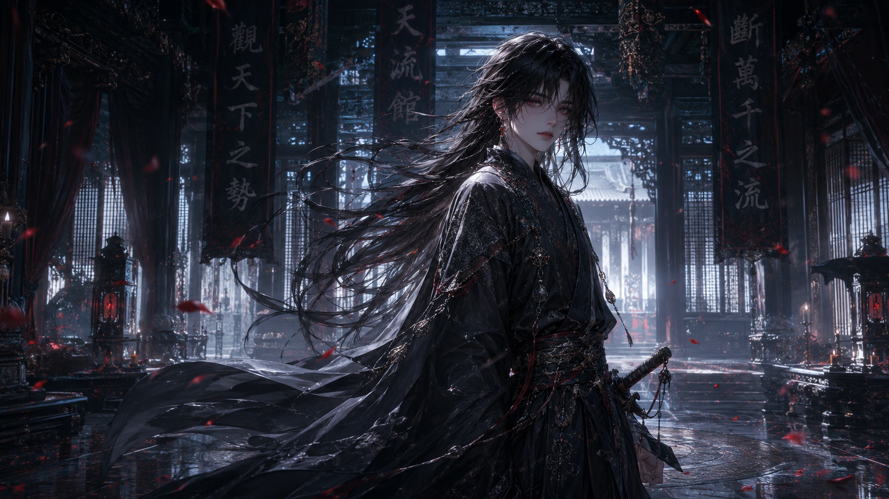
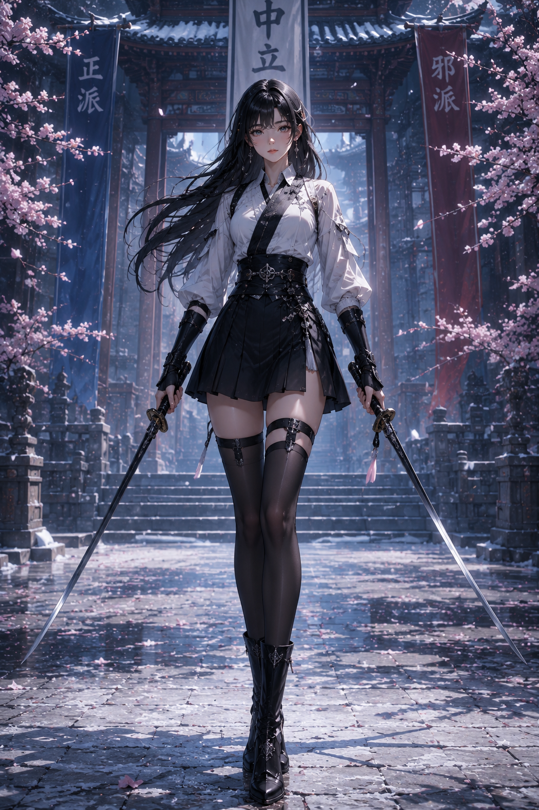
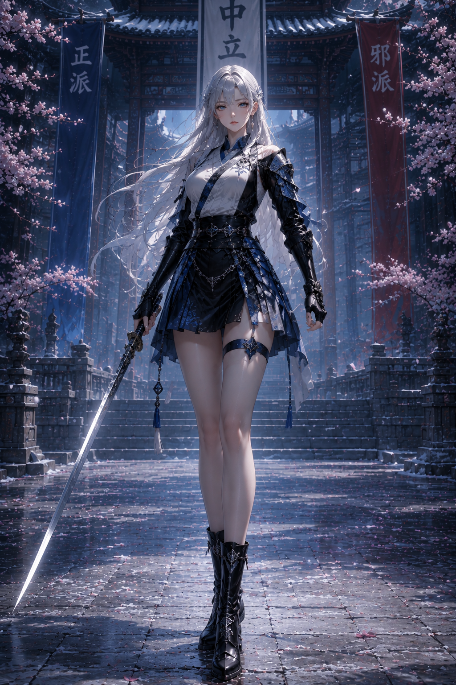
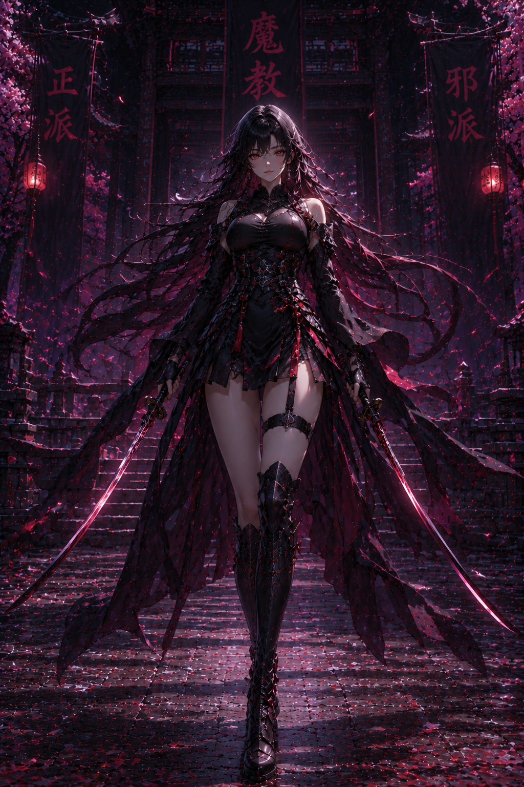
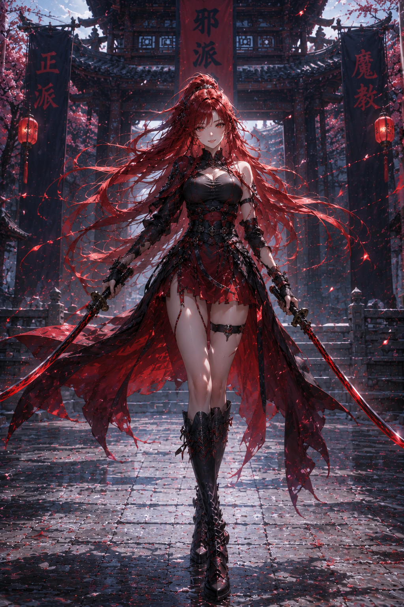
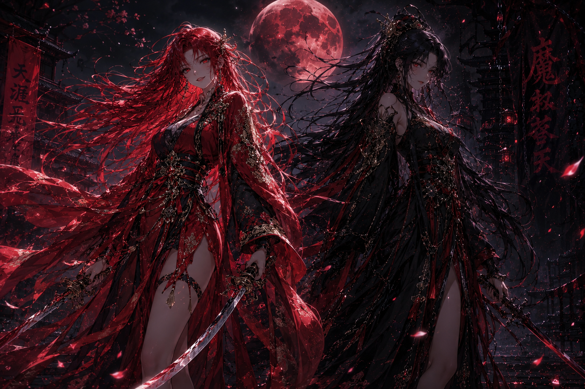

전서율
검은 장발, 창백한 피부, 붉은 기운의 눈, 검은 장포와 차분하고 위험한 분위기의 공식 비주얼 기준.
SOURCE REFERENCEAUTHOR-PROVIDED SOURCE MATERIAL
작성자가 제공한 캐릭터 이미지의 프로젝트 보관 현황입니다. 현재 이미지는 레퍼런스이며 게임용 파생 에셋은 별도로 제작합니다.

검은 장발, 창백한 피부, 붉은 기운의 눈, 검은 장포와 차분하고 위험한 분위기의 공식 비주얼 기준.
SOURCE REFERENCE
긴 흑발, 흑백 계열 복장, 쌍검, 중립 세력의 정제된 분위기를 보여주는 정면 기준 이미지.
SOURCE REFERENCE
은백색 장발, 푸른 장식, 정파적 절제와 고귀함을 강조한 정면 기준 이미지.
SOURCE REFERENCE
긴 흑발, 붉은 눈, 검붉은 전투복, 마교 계열의 위압감과 집착성을 나타내는 정면 기준 이미지.
SOURCE REFERENCE
붉은 장발, 검붉은 쌍검 복장, 자유롭고 자신감 있는 사파 계열 분위기의 정면 기준 이미지.
SOURCE REFERENCE
붉은 계열의 진하연과 검은 계열의 연서를 함께 표현한 후반부 관계·대치·이벤트 CG 스타일 기준.
SOURCE REFERENCE